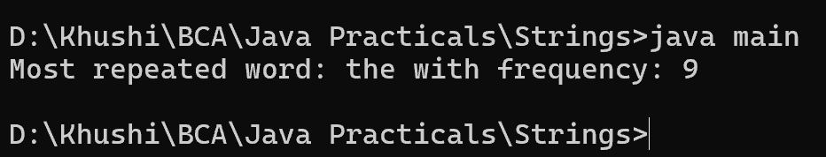

29. Program to find the most repeated word in a text file
import java.io.*;
import java.util.*;
class main {
public static void main(String[] args) {
String fileName = "text.txt";
Map<String, Integer> wordCount = new HashMap<>();
try (BufferedReader br = new BufferedReader(new FileReader(fileName))) {
String line;
while ((line = br.readLine()) != null) {
String[] words = line.split("\\s+");
for (String word : words) {
word = word.toLowerCase().replaceAll("[^a-zA-Z]", "");
wordCount.put(word, wordCount.getOrDefault(word, 0) + 1);
}
}
String mostRepeatedWord = null;
int maxCount = 0;
for (Map.Entry<String, Integer> entry : wordCount.entrySet()) {
if (entry.getValue() > maxCount) {
maxCount = entry.getValue();
mostRepeatedWord = entry.getKey();
}
}
System.out.println("Most repeated word: " + mostRepeatedWord + " with frequency: " + maxCount);
} catch (IOException e) {
System.out.println("Error reading the file: " + e.getMessage());
}
}
}
